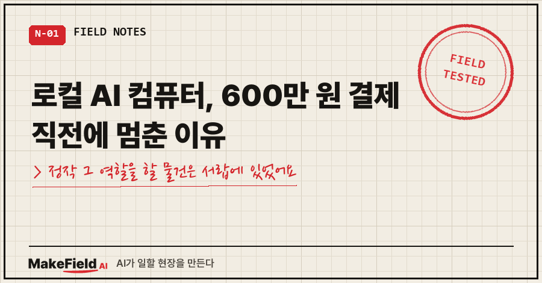
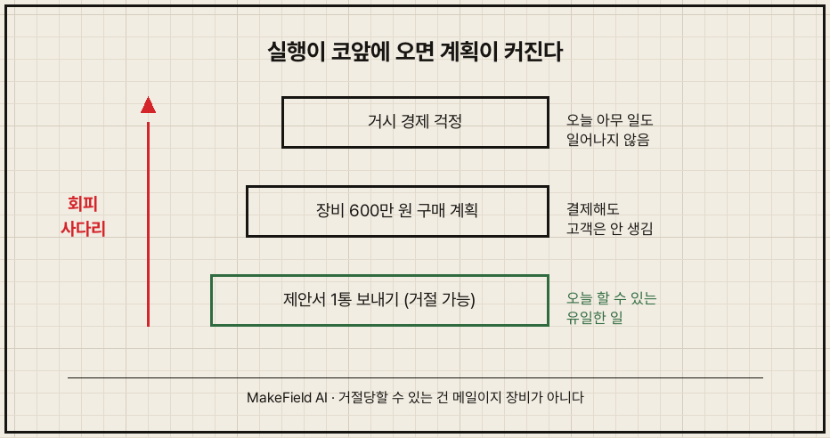
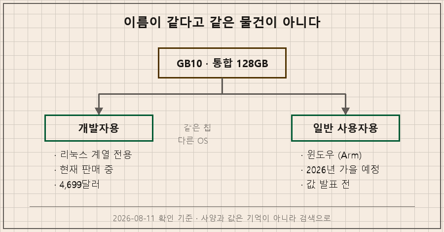
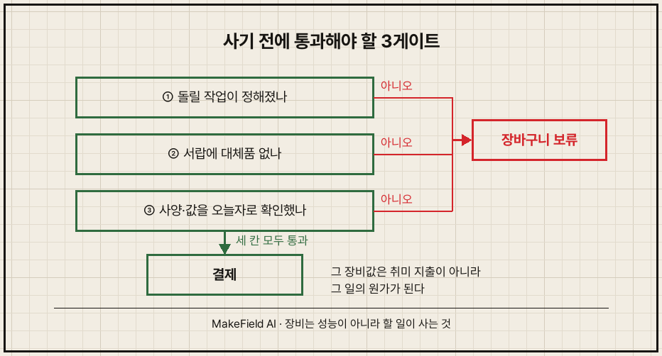

장바구니를 두 달 만에 비웠습니다.
담아둔 건 AI 돌리라고 나온 데스크탑 한 대였고, 예산은 600만 원으로 잡아뒀었어요.
결론부터 적을게요.
로컬 AI 컴퓨터는 성능이 아쉬워서 사는 게 아니라, 그 장비로 할 일이 정해졌을 때 사는 겁니다. 저는 순서를 거꾸로 쥐고 있었어요. 결제를 접은 이유가 정확히 셋인데, ①그 성능을 쓸 작업이 아직 없었고 ②같은 역할을 할 물건이 이미 제 서랍에 있었고 ③제가 알던 사양과 가격이 둘 다 오늘 기준으로 틀려 있었습니다.
저는 장비 사양서 보고 견적 따지는 일로 15년쯤 밥을 먹었어요.
남의 돈으로 살 땐 그렇게 깐깐하게 굴면서, 제 돈 앞에서는 사양표 맨 윗줄만 보고 있더라고요..
1. 실행할 일이 코앞에 오면 자꾸 장비 얘기를 하고 있었어요
밤에 AI랑 앞으로 뭘 해서 돈을 벌지 길게 상의하던 날이었습니다.
그날 제가 친 말을 대화 로그에서 그대로 떠왔어요.
[나] 가장 최초는 AI 전용 장비를 하나 구매해서
나만의 개인 AI 모델을 구축하는 것도 필수다.
(이것이 나중엔 돈벌이 도구가 될 거라 희망한다.)돌아온 답이 좀 아팠습니다.
[AI] 지금 없는 건 자본이 아니라 '과제'입니다.
예전에도 장비는 월급이 아니라,
산출물을 약속받은 남의 돈이 샀습니다.그리고 대화 흐름을 짚어주는데 반박을 못 했어요.
제안서 한 통 보내기, 회신 기다리기처럼 거절당할 수 있는 일이 테이블에 올라올 때마다 제 다음 메시지가 한 단계씩 더 큰 계획으로 올라가 있었거든요. 장비 구매 계획도 그중 하나였고요.
거절당할 수 있는 건 메일이지 장비가 아닌데 말이죠.
없던 건 과제였지 장비가 아니었습니다.

2. 사양을 물어봤더니, AI가 아주 또박또박 틀렸어요
그렇다고 장비 조사가 헛일은 아니었어요. 로컬 AI 컴퓨터를 파보다가 오히려 더 큰 걸 하나 배웠거든요.
제가 사려던 건 손바닥만 한 상자에 128GB 메모리가 통으로 들어가서, 2,000억 파라미터급 모델까지 내 책상에서 돌린다는 물건이었습니다. 클라우드에 자료를 못 올리는 곳에서 일해본 사람이면 이 문구에 혹할 수밖에 없어요.
그래서 물었습니다. "이거 윈도우에서 돌아가?"
AI는 아니라고, 리눅스 계열 전용이라고 딱 잘라 답하더라고요.
틀렸습니다. 정확히는 반만 맞았어요.
같은 칩을 쓰는 윈도우 버전이 따로 있었거든요. 개발자용은 리눅스, 일반 사용자용은 윈도우로 갈라져 나온 겁니다.
| 구분 | 개발자용 (DGX Spark) | 일반 사용자용 (RTX Spark) |
|---|---|---|
| 운영체제 | 리눅스 계열 전용 | 윈도우 (Arm) |
| 칩·메모리 | GB10 · 통합 128GB | GB10 · 통합 128GB |
| 상태 | 판매 중 | 2026년 가을 출시 예정 |
| 값 | 4,699달러 | 발표 전 (제조사별 상이) |
※ 2026년 8월 11일 확인 기준. 값은 제조사 발표가라 국내 가격·환율·주변기기는 별도예요.
가격 줄이 특히 뜨끔했어요. 제가 기억하던 값은 3,999달러였는데, 2026년 2월에 메모리 수급 문제로 한 번 올랐더라고요. 제 머릿속 예산표는 반년 묵은 종이였던 겁니다.
그래서 규칙 파일에 한 줄 박아뒀어요.
빠르게 바뀌는 하드웨어·제품 사양(가격·출시일·OS)은
기억으로 단정하지 말고 검색 먼저.
확인 못 하면 "모른다"로 답할 것.AI가 헤맬 때 말이 흐려지면 차라리 낫습니다. 문제는 틀릴 때일수록 문장이 더 또박또박해진다는 거예요.
여러분도 AI가 알려준 제품 가격, 그대로 예산에 넣어보신 적 있으시죠?

3. 서랍을 열었더니 이미 있더라고요
그날 대화 후반에 제가 이렇게 말했어요. 이것도 원문 그대로입니다.
[나] 나에게 nano가 있는데 이걸로 뭘 할 수 있을려나?
그리고 라즈베리파이가 있고..AI 반응이 두 갈래였는데 둘 다 맞았습니다.
하나는 "그것도 같은 회피 근육"이라는 지적. 실행 항목을 앞에 두고 이번엔 서랍 재고 조사로 도망갔다는 거죠.
다른 하나는 그럼에도 재고는 진짜라는 것. 600만 원짜리로 하려던 일 — 카메라로 뭘 감지해서 현장 제어기기에 신호를 넘기는 미니 데모 — 은 이미 가진 소형 보드로 충분히 재연되는 그림이었거든요.
여기서 제일 크게 바뀐 생각이 이겁니다.
특정 회사 AI에 종속되는 게 무서워서 장비를 사려던 건데, 진짜 대비책은 하드웨어가 아니었어요.
제 지식이랑 작업 방식이 전부 평범한 텍스트 파일로 남아 있으니 어느 모델에 꽂아도 그대로 굴러갑니다. 장비를 사둔들 그 위에 올릴 게 없으면 그냥 비싼 상자고요.
로컬 AI 컴퓨터를 살지 말지, 그날 이후로 저는 이 세 줄로 정리해요.
| 사기 전에 볼 것 | 통과 기준 | 제 답 (그날) |
|---|---|---|
| 그 장비로 할 작업이 정해졌나 | 이번 달 안에 돌릴 것이 있다 | 없음 |
| 대체할 물건이 이미 있나 | 서랍·창고·기존 PC 확인 | 소형 보드 2대 있음 |
| 사양·가격을 오늘자로 확인했나 | 제조사 발표 기준 직접 확인 | 반년 묵은 기억 |
세 줄 중 하나라도 막히면 장바구니에 그냥 둡니다. 사고 싶은 마음은 안 없어지는데, 결제는 안 하게 되더라고요.

이런 것도 궁금하실 것 같아요
Q. 로컬 AI 컴퓨터, 그래도 언젠간 필요하지 않나요?
필요해지는 순간이 꽤 분명하다고 봅니다. 자료를 밖으로 못 내보내는 곳에 뭔가를 납품하게 됐을 때요. 그때는 장비값이 비용이 아니라 그 일의 원가가 되니까요. 지금 제 상태는 그 일이 아직 없는 거고, 그러면 같은 돈이 그냥 취미 지출이에요. 순서를 뒤집지 않기로 했습니다.
Q. 서랍 속 소형 보드로 뭘 할 수 있나요?
큰 모델을 통으로 돌리는 건 무리예요. 대신 카메라 영상에서 뭔가를 찾아내 신호로 바꿔주는 정도는 충분합니다. 저한테 필요한 건 성능 자랑이 아니라 "이런 게 됩니다"를 눈앞에서 보여줄 실물이라, 이 정도면 역할이 맞아요.
솔직하게 마무리할게요.
한 달이 지났는데 그 보드는 아직 서랍에 있습니다. 대신 600만 원도 아직 제 통장에 있고요!
그래서 규칙을 하나 더 만들었어요. 그 보드를 꺼내 만진 날은 반드시 글이든 영상이든 하나를 내보내기로. 만들기만 하고 안 꺼내는 게 제 오래된 병이라서요.
다음 글에서는 그 보드를 실제로 꺼내서 뭘 붙여봤는지, 되는 것과 안 되는 것을 그대로 써보겠습니다.
사둔 장비랑 만들다 만 자동화 목록까지 다 적어두는 곳은 makefield.ai입니다.
태그: #로컬AI컴퓨터 #개인AI서버 #AI전용컴퓨터 #로컬LLM #AI장비구매 #온프레미스AI #엣지AI #젯슨나노 #라즈베리파이 #AI하드웨어 #AI공부장비 #AI활용법 #AI로일하기 #현장엔지니어 #MakeFieldAI